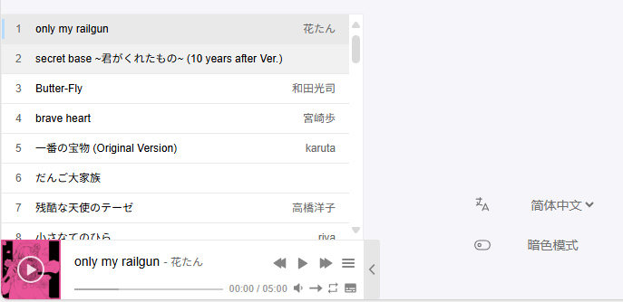

通过Aplayer引入音乐播放器，再使用PJAX不刷新加载技术，实现页面切换不中断音乐播放
1 引入音乐播放器
- 【Aplayer官方文档】
- （1）在博客主目录中创建文件
layouts\partials\footer\custom.html，此文件为Stack主题作者留给我们加入自定义组件用的文件(可以查看主题源码同路径文件找到)
- （2）查看官方文档，引入对应的脚本，css到
custom.html中，页面最下面就会出现音乐播放器
1
2
3
|
<link href="https://cdn.bootcss.com/aplayer/1.10.1/APlayer.min.css" rel="stylesheet">
<script src="https://cdn.bootcss.com/aplayer/1.10.1/APlayer.min.js"></script>
<script src="https://cdn.jsdelivr.net/npm/meting@2.0.1/dist/Meting.min.js"></script>
|
1
2
3
4
5
6
7
8
9
10
11
12
13
14
|
<div id="aplayer01"></div>
<script type="text/javascript">
const ap = new APlayer({
//定义容器
container: document.getElementById('aplayer01'),
//关于音频的相关参数：
audio: [{
name: '碧い瞳のエリス',//音频名称
artist: '安全地帯',//艺术家
url: 'https://doge.ottoli.cn/安全地帯 - 碧い瞳のエリス.mp3',//文件地址
cover: 'https://doge.ottoli.cn/aqdd.jpg'//封面地址
}]
});
</script>
|
更多用法请参考：APlayer官方文档
- （4）APlayer 原生用法设置参数十分繁琐，而且只能调用音频文件直链，增加服务器开销。而使用 MetingJS 就很好地解决了这个问题。一个MetingJS播放器至少需要三个参数：
1
2
3
|
id='外链播放器id',必须参数,Id
type=[song=单曲, playlist=歌单, album=专辑, search=搜索结果, artist=艺术家],必须参数,调用类型
server=[netease=网易云音乐, tencent=QQ音乐, kugou=酷狗音乐, xiami=虾米音乐, baidu=百度音乐],必须参数,调用的API
|
在只设置了这三个参数的情况下，列表默认展开，且播放器显示占用地方较大，可以再设置以下两个参数：
1
2
3
|
fixed = 启用固定模式，固定在左下角,默认false
mini = 启用迷你模式,默认false
|
